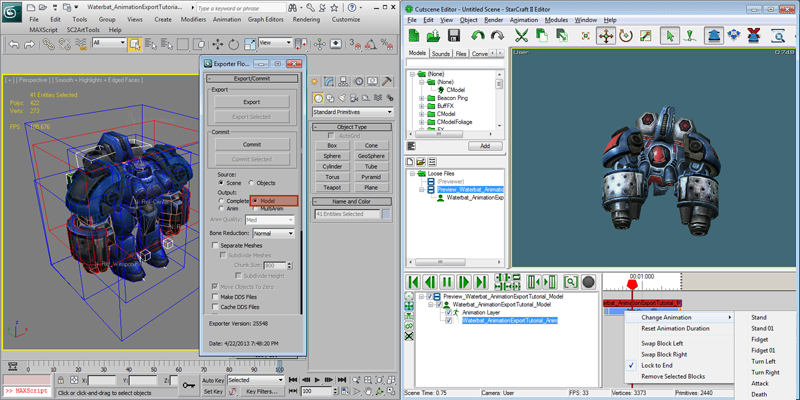
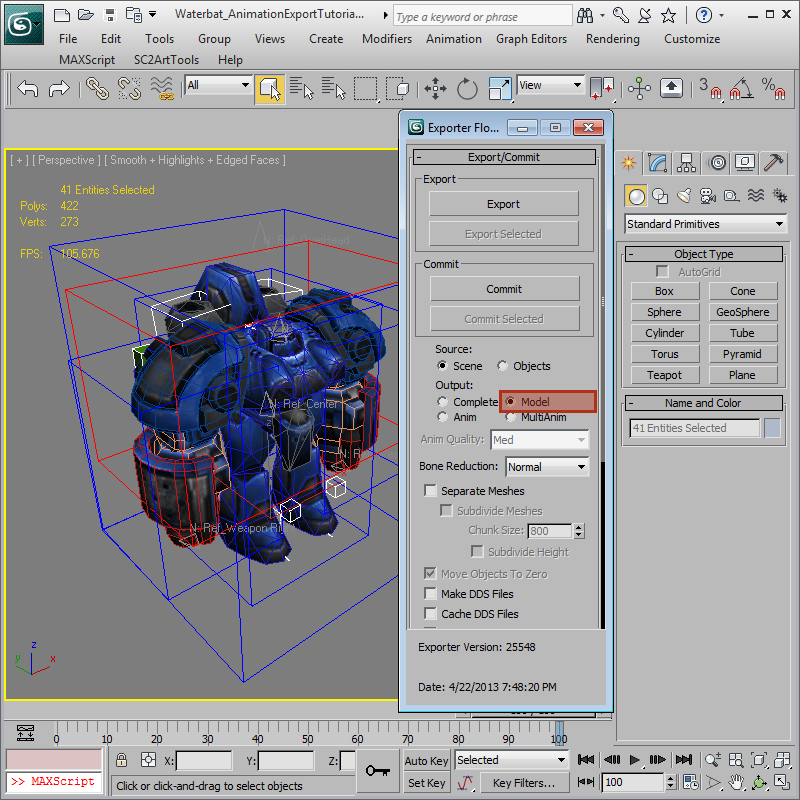
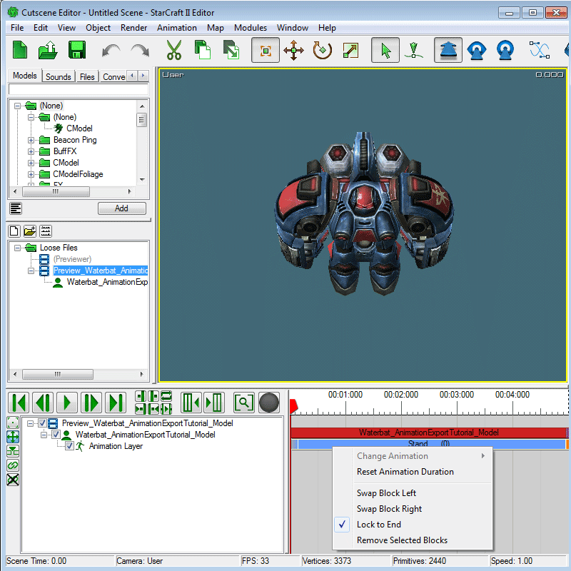
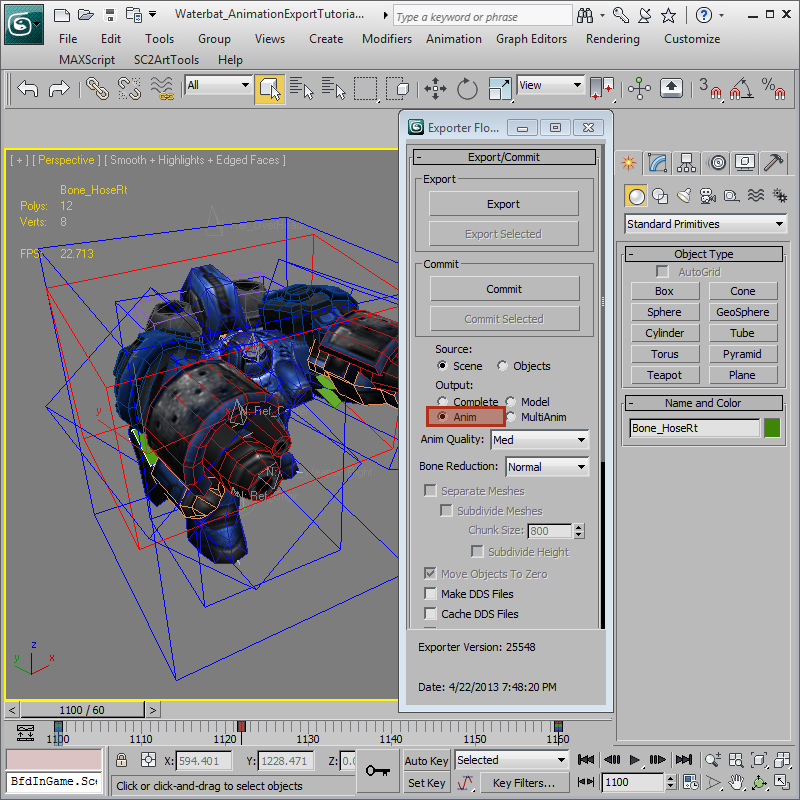
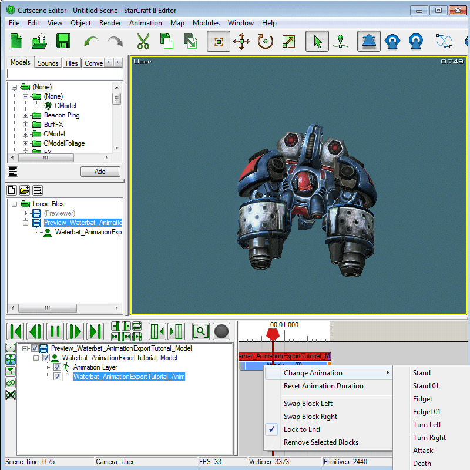

Advance Tutorial 03: Export Anim
The StarcraftArtTools can export a complete model with animation by default known as an .M3, but it can also export a model with no animations as well as an animation only file known as an .M3A
Getting Started
-
Open 'Waterbat_AnimationExportTutorial_Model.max'. It contains the Waterbat unit with no animations. Open the 'SC2ArtTools > Export > Export Floater' and notice the Output is set to Model.

Preview the Model
-
Preview the model. This will pop up the Cutscene Editor and you will see there is a blank stand anim and nothing else. The stand anim is actually just created by the game when no anim is present and it is not a real stand anim.

Open the Animation file in 3DSMax
-
Open 'Waterbat_AnimationExportTutorial_Anim.max'. It contains the Waterbat unit with animations. In the 'SC2ArtTools > Export > Export' notice the Output is set to Anim.

Preview Add the Animation
-
Now we will export an m3a file and add it to the Waterbat_AnimationExportTutorial_Model.m3 by using 'Export Floater > Preview Add'. This will export the animation file and load it into the Cutscene Editor on the existing model. If there are multiple models in the Cutscene Editor, the selected one will get the m3a added to it. The model in the Cutscene Editor will now show an added animation file and have extra animations available.

Notes on Animation Files
-
The m3a Animation file can animate all animatable tracks as long as Objects and Track Names are identical to the base model.
Models where it is anticipated that an m3a will be used should have Bone Reduction set to None in the Export Floater.
m3a files can also be loaded on to a Complete Model with animation.
Multiple m3a files can be loaded on to a single model.
m3a files Cannot be unloaded from a model in-game without exiting the map.